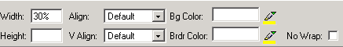

Wenn eine Spalte innerhalb einer Tabelle markiert ist (oder Sie in der Optionsleiste den <TD>-Tag anklicken), stehen folgende Optionen zur Verfügung:
- Breite & Höhe – spezifiziert die Maße der Zelle. Die Maße können sowohl als Pixel oder als Prozent angegeben werden. Wenn Sie eine Breite in Pixel wählen, die größer als 1000 ist, wird folgende Fehlermeldung angezeigt: "Wert zu groß". Wir empfehlen in einem solchen Fall, den Wert in Prozent anzugeben. Die Höhe ist meistens durch das einzufügende Objekt angegeben, kann natürlich auch von Ihnen definiert werden.
- Position – hier können Sie die Position des Zelleninhaltes angeben: Vorgegeben, Links, Rechts, Mitte.
- V Position – mit diesem Dropdownmenu haben Sie die Möglichkeit, den Inhalt der Zelle vertikal zu positionieren: Vorgegeben, Oben, Unten, Grundlinie, Zentriert
- Bg Farbe - definiert die Hintergrundfarbe der Zelle. Der Wert kann auch Hexadezimal eingegeben werden
- Brdr Farbe – definiert die Rahmenfarbe der Tabelle. Der Wert kann auch Hexadezimal eingegeben werden
- Kein Umbruch – diese Option erlaubt es Ihnen, den automatischen Textumbruch zu deaktivieren. Wenn diese Option aktiviert ist wird der eingegebene Text die Zelle vergrößern.